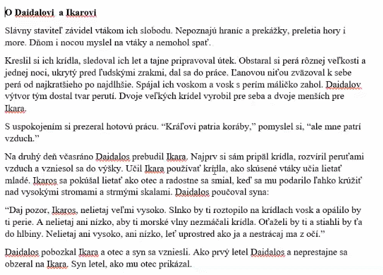
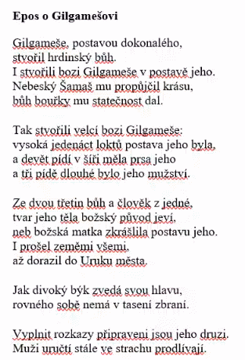
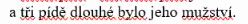
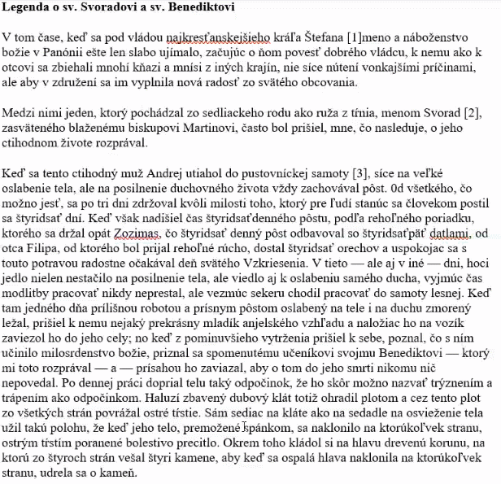

chronologia
správne sledovanie časovej osi - veci sa dejú za sebou
z greckeho chronos
dejova linia
je ich niekolko
napr v romane
nie je jedinym prvkom diela,existuje aj vyznamova rovina
tak napriklad maco mliec:
praca oslobodzuje
alebo bacik z choholova:
to je si zalozeny na bohatom prostredi, neznamena ze si rovnako usilovny a ze si tam zasluzis byt
zaner |
poviedka |
novela |
dej |
jednoducha dejova linia, jednoducha udalost, priamociare pokojne rozpravanie |
zlozitejsia dejova linia, dramaticky spad, potlacanie opisnosti, prekvapujuca pointa |
kompozicia |
pokojne rozpravanie bez draatickeho zvratu |
uzavrety utvar s dramaticky sa rozvijajucim dejom |
Postavy |
jedna/dve, obycajni ludia s uz vytvorenych charakterom |
viac postav, hlavna postava ma specialny charakter, ktory sa na vrchole deja prejavi |
mýty/báje
primitívny pohľad človeka na svet
život bohov, vysvetľujú si ako funguje svet
napr. starí gréci

eposy
veľký žáner
epos o gilgamešovi - vpodstate prvá literatúra


legenda
ako báj, ale aj sa to stalo ¯\_( ͡° ͜ʖ ͡°)_/¯
životopis svätca

kronika
časové zoradenie historických udalostí
Bájka
s ponaučením
obrazná